CS184/284A Spring 2025 Homework 3 Write-Up
Link to webpage: (TODO) cs184.eecs.berkeley.edu/sp25 Link to GitHub repository: (TODO) cs184.eecs.berkeley.edu/sp25

Overview
Give a high-level overview of what you implemented in this homework. Think about what you've built as a whole. Share your thoughts on what interesting things you've learned from completing the homework.Part 1: Ray Generation and Scene Intersection
For each pixel \( (x, y) \), we generate ns_aa samples using a uniform grid sampler. Each sample
adds a random offset within the pixel, normalized to \( [0,1] \times [0,1] \) by dividing by image width and
height. This is passed to camera->generate_ray(), which maps it to a direction in camera space
using the field of view angles, then transforms it to world space via the camera-to-world matrix
c2w. The ray originates at the camera position with min_t = nClip and
max_t = fClip. Radiance estimates from all samples are averaged to produce the final pixel
color.
Each ray is tested against scene primitives, accepting only hits where \( t \in [t_{min}, t_{max}] \). When a
valid intersection is found, max_t is updated to \( t \) so subsequent
tests automatically discard farther geometry, always keeping the nearest hit.
Triangle intersections were determined using the Moller–Trumbore Algorithm. Given ray \( \mathbf{r}(t) = \mathbf{o} + t\mathbf{d}\) and triangle vertices \(p_1, p_2, p_3\), we solve for \(t, u, v \) such that:
\[ \mathbf{o} + t\mathbf{d} = (1-u-v)p_1 + up_2 + vp_3 \]where \( u, v \geq 0\) and \(u + v \leq 1 \) are barycentric coordinates.
- Compute edge vectors \( e_1 = p_2 - p_1\), \(e_2 = p_3 - p_1 \)
- Compute \( h = \mathbf{d} \times e_2\) and \(a = e_1 \cdot h\). If \(|a| < \varepsilon \), ray is parallel
- Compute \( s = \mathbf{o} - p_1\), then \(u = (s \cdot h) / a\). If \(u < 0\) or \(u> 1 \), miss
- Compute \( q = s \times e_1\), then \(v = (\mathbf{d} \cdot q) / a\). If \(v < 0\) or \(u + v> 1 \), miss
- Compute \( t = (e_2 \cdot q) / a\). If \( t \in [t_{min}, t_{max}] \), valid intersection
The surface normal is determined by taking the average of the vertex normals weighted by their barycentric coordinates.
Given ray \(\mathbf{r}(t) = \mathbf{o} + t\mathbf{d}\) and a sphere centered at \(\mathbf{c}\) with radius \(r\), we substitute the ray into the sphere equation \(|\mathbf{p} - \mathbf{c}|^2 = r^2\), yielding the quadratic:
\[ at^2 + bt + c = 0 \]where:
\[ a = \mathbf{d} \cdot \mathbf{d}, \quad b = 2(\mathbf{o} - \mathbf{c}) \cdot \mathbf{d}, \quad c = |\mathbf{o} - \mathbf{c}|^2 - r^2 \]The discriminant \(\Delta = b^2 - 4ac\) determines the number of intersections: if \(\Delta < 0\) there is no intersection, if \(\Delta=0\) the ray is tangent, and if \(\Delta> 0\) there are two intersections:
\[ t_{1,2} = \frac{-b \mp \sqrt{\Delta}}{2a} \]We take the smaller \(t_1\) (entry point) if it lies within \([t_{min}, t_{max}]\), otherwise fall back to \(t_2\) (exit point, for rays originating inside the sphere). The surface normal at hit point \(\mathbf{p}\) is computed analytically as:
\[ \mathbf{n} = \frac{\mathbf{p} - \mathbf{c}}{|\mathbf{p} - \mathbf{c}|} \] Shown below are a couple of simple rendered images:
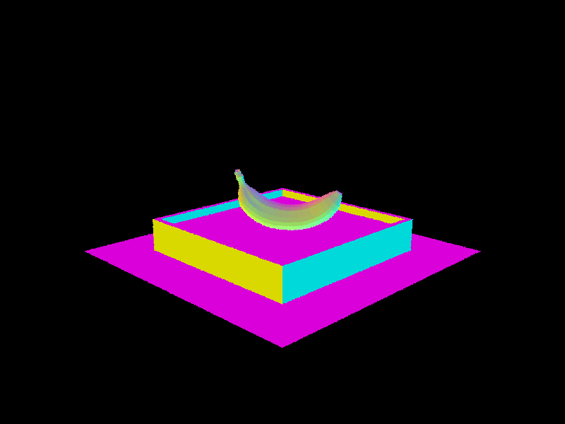
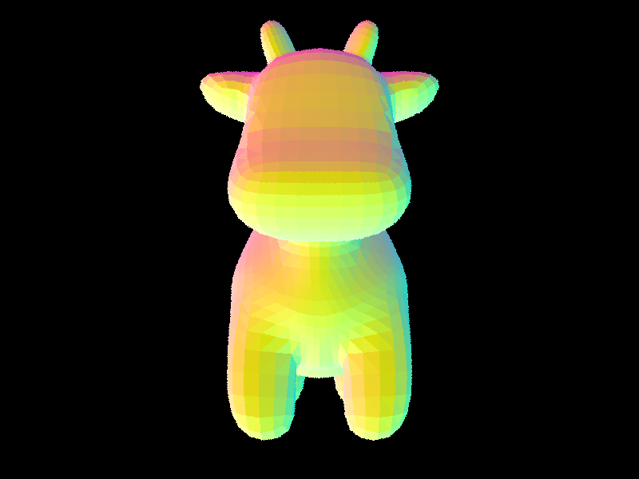
Part 2: Bounding Volume Hierarchy
The BVH is constructed recursively. First, we compute the bounding box of all primitives in the current range
and create a new node. If the number of primitives is at most max_leaf_size, we create a leaf
node and store the iterators directly. Otherwise, we split the primitives into two groups and recurse.
For the splitting heuristic, we choose the longest axis of the bounding box extent \(\mathbf{e} = \mathbf{max} - \mathbf{min}\), then split at the centroid of the bounding box along that axis:
\[ \text{axis} = \arg\max(e_x, e_y, e_z), \quad \text{split} = \frac{\text{min}[\text{axis}] + \text{max}[\text{axis}]}{2} \]Primitives whose bounding box centroid falls below the split point go into the left child; the rest go into
the right child. We use std::partition to reorder primitives in-place. If all primitives end up
on one side (degenerate case where all centroids are identical), we fall back to splitting at the median
index to avoid infinite recursion.
The longest-axis heuristic works well in practice because splitting along the widest dimension tends to produce the most spatially separated children, minimizing bounding box overlap and maximizing ray pruning efficiency.
Shown below is a scene with more complex geometries. Rendering times on my personal machine are listed below:
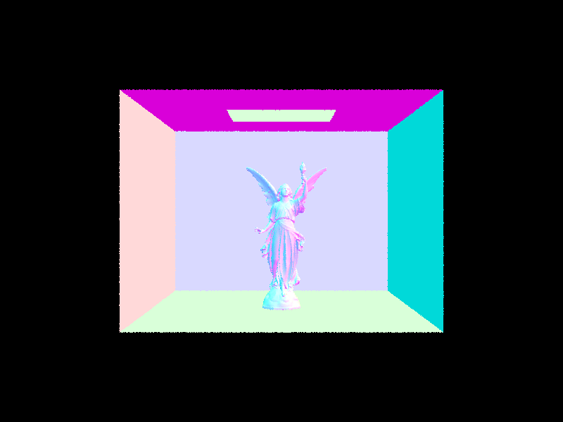
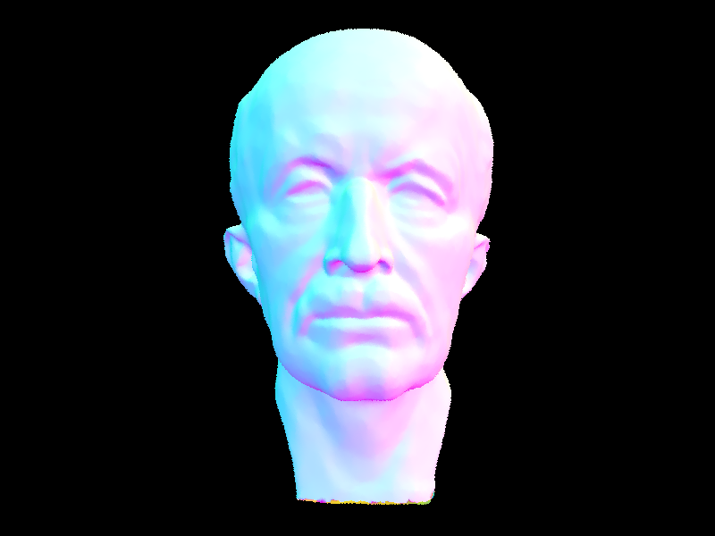
Times rendered with BVH acceleration are notably faster due to the logarithmic time complexity when compared to the naive implementation that is linear tiime.
Part 3: Direct Illumination
Uniform Hemisphere Sampling
For each intersection point \(p\), we sample \(N\) random directions \(\omega_i\) uniformly over the
hemisphere using hemisphereSampler->get_sample(). For each sampled direction, we cast a shadow
ray from \(p\) in that direction. If it hits an emissive surface, we accumulate the contribution using the
Monte Carlo estimator of the reflection equation:
The pdf for uniform hemisphere sampling is \(\frac{1}{2\pi}\), so dividing by it means multiplying by \(2\pi\), factored outside the loop.
Importance Sampling Lights
Instead of sampling random directions, we loop over every light in the scene explicitly. For area lights, we
take ns_area_light samples; for point lights (delta lights), we take exactly 1 since all
samples are identical. For each sample, sample_L returns the emitted radiance, the direction
\(\omega_i\) toward the light, the distance to the light, and the pdf. We then cast a shadow ray with
max_t = dist - ε to check for occlusion. If unoccluded, we accumulate:
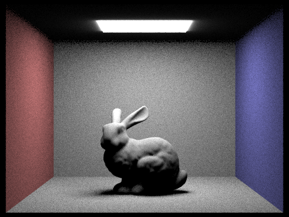
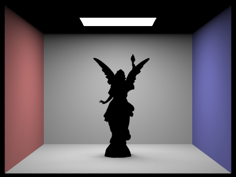
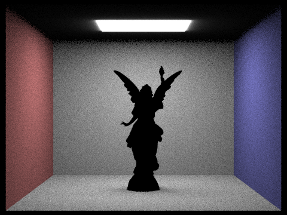
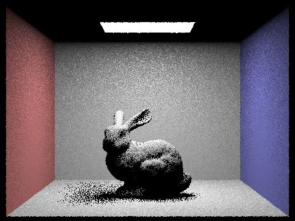
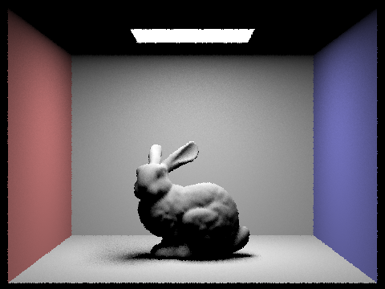
Uniform hemisphere sampling produces significantly noisier results than importance sampling at the same sample count. Because hemisphere sampling fires rays in random directions, most samples miss light sources entirely and contribute nothing, only the rare sample that happens to hit a light contributes signal, making convergence very slow. Soft shadows in particular appear grainy and take many samples to resolve. Importance sampling eliminates this waste by sampling directions guaranteed to point toward a light source, so every sample contributes useful signal. The result is lower variance at equal sample counts: soft shadows are smoother, and the overall image converges much faster. The noise comparison across \(l = 1, 4, 16, 64\) light rays shows lower l values correspond with noiser images.
Part 4: Global Illumination
The function at_least_one_bounce_radiance recursively estimates global illumination.
At each hit point, we first compute direct lighting via one_bounce_radiance (if
isAccumBounces=true, or if we are exactly at max_ray_depth). Then, unless
we've hit the base case (r.depth <= 1), we apply Russian Roulette with termination
probability 0.35. Given it survives, we sample a new direction from the BSDF using
sample_f, cast a new ray from the hit point, and recursively call
at_least_one_bounce_radiance on the next intersection. The indirect contribution is
accumulated as:
Dividing by \((1 - p_{\text{terminate}})\) keeps the estimator unbiased despite random termination.
Each ray's depth decrements by 1 per bounce, and recursion stops when depth reaches 1
or Russian Roulette terminates the path.
Normal global illumination without Russian Roulette was implemented with a termination rate of 0.
Global Illumination Results (1024 spp)


Direct vs. Indirect Illumination (CBspheres, 1024 spp)
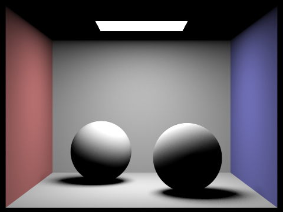
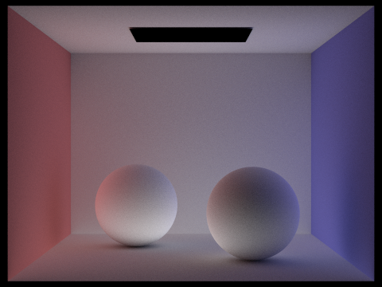
Unaccumulated Bounces — CBbunny (isAccumBounces=false, 1024 spp)
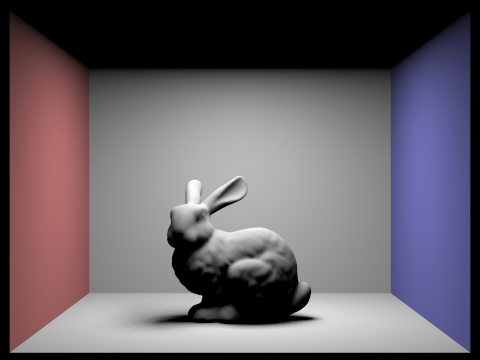
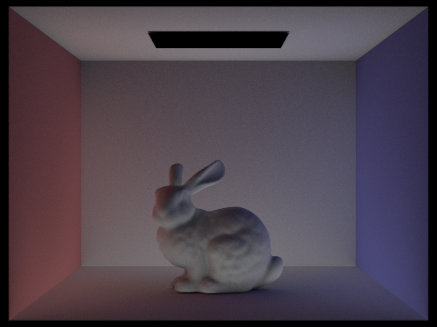
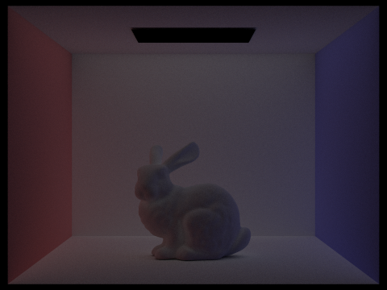
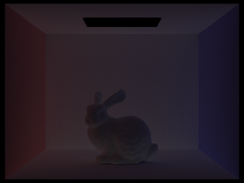
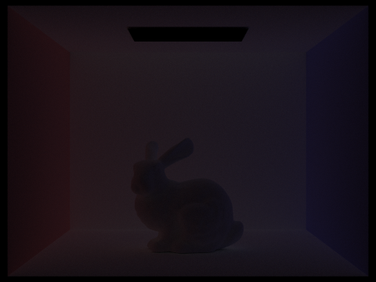
The 2nd bounce of light illuminates areas that are in shadow from the direct light, most visibly at the underside of the bunny and the ceiling, which receive light only after it has reflected off the floor and walls. The 3rd bounce softens the scene further, filling in darker corners and adding subtle color bleeding from the red and blue walls onto the bunny.
Accumulated Bounces — CBbunny (isAccumBounces=true, 1024 spp)
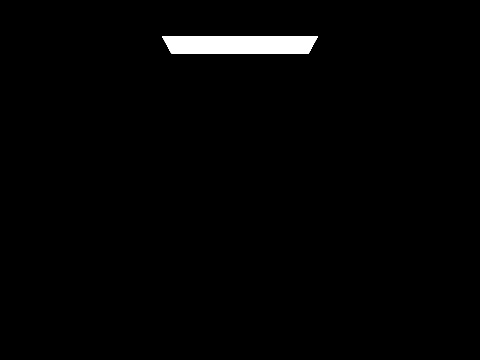
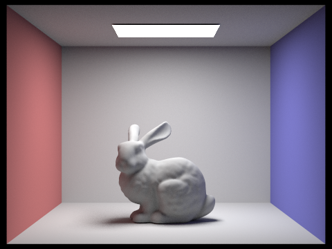
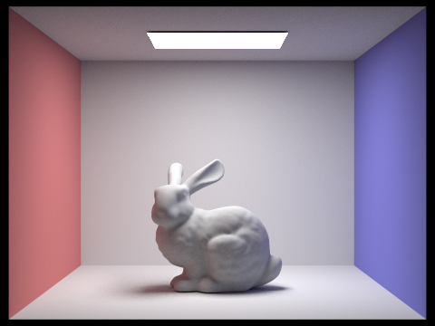
Russian Roulette — CBbunny (1024 spp)
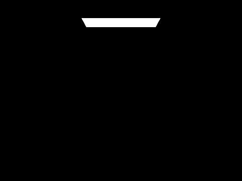
Sample Rate Comparison — CBspheres (4 light rays)
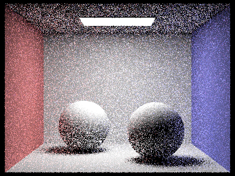
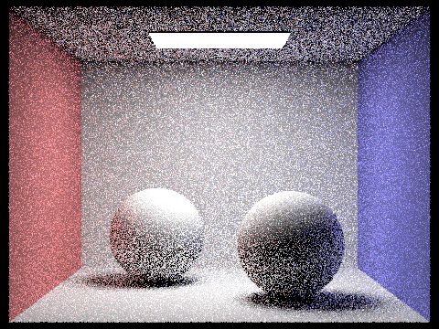
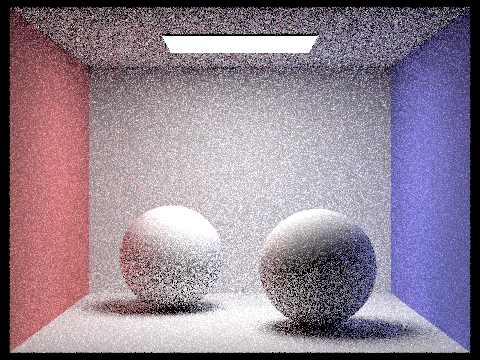
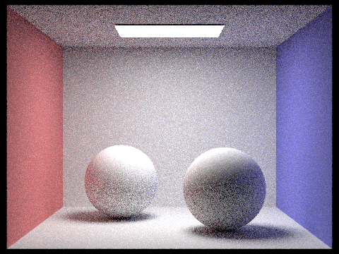
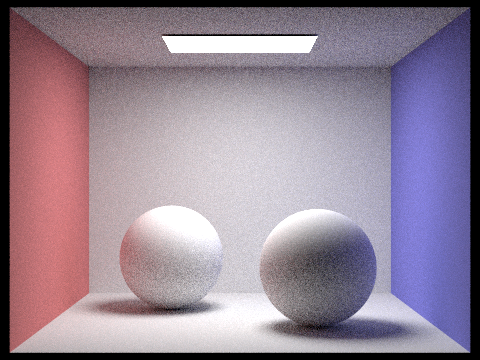
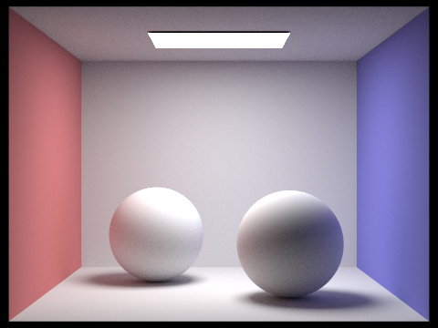
Part 5: Adaptive Sampling
Adaptive sampling concentrates samples in difficult parts of the image while using fewer samples
in regions that converge quickly. For each pixel, we trace samples one by one and periodically
check whether the pixel has converged using a statistical confidence interval. Specifically, every
samplesPerBatch samples, we compute the 95% confidence interval half-width:
where the mean and variance are computed from running sums:
\[ \mu = \frac{s_1}{n}, \quad \sigma^2 = \frac{1}{n-1}\left(s_2 - \frac{s_1^2}{n}\right) \]
If \(I \leq \text{maxTolerance} \cdot \mu\), the pixel has converged and we stop sampling early.
Otherwise we continue until ns_aa samples are reached.
In the implementation, we maintain two running variables s1 (sum of illuminance
samples) and s2 (sum of squared illuminance samples), adding each new sample's
illum() value as we go. Every samplesPerBatch samples, we compute
\(I\) and check the convergence condition. The actual number of samples taken is stored in
sampleCountBuffer, which produces the sampling rate visualization.
Simple regions like flat walls converge quickly (blue in the rate image) while complex regions
like shadow boundaries and the bunny's fur require many more samples (red in the rate image).
Adaptive Sampling Results (2048 spp, 1 light ray, max depth 5)
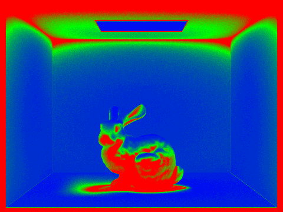
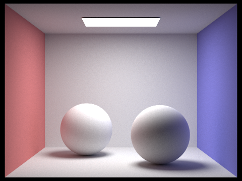
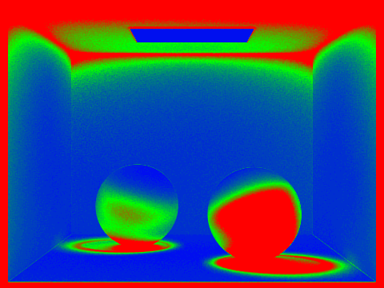